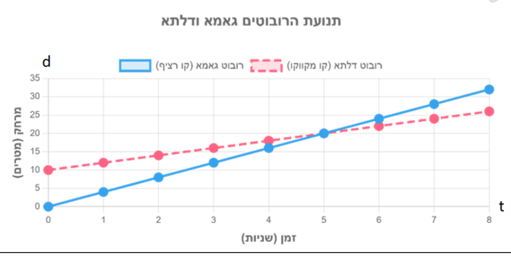

אלגברה לכיתה ח'
19
8
במעבדה נערך ניסוי עם שני רובוטים: "גאמא" (קו רציף) ו"דלתא" (קו מקווקו). הגרף מתאר את המרחק של כל רובוט מנקודת ההתחלה (d, במטרים) לפי הזמן (t, בשניות):

- א.מי מהרובוטים יצא ישירות מנקודת ההתחלה?גאמאדלתא
- ב.מה היה המרחק ההתחלתי של הרובוט השני?מ'
- ג.איזה רובוט נע מהר יותר? הסבירו כיצד רואים זאת בגרף.גאמאדלתאהסבירו:
- ד.כעבור כמה שניות נפגשו הרובוטים?שניות
- ה.באיזה מרחק מנקודת ההתחלה התרחש המפגש?מ'